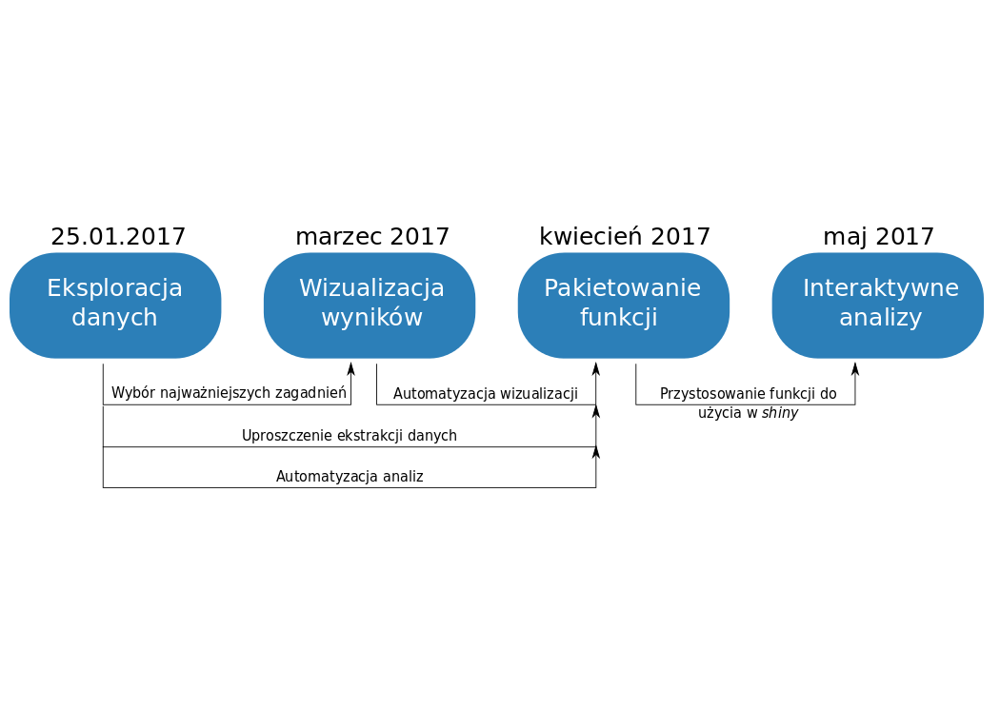
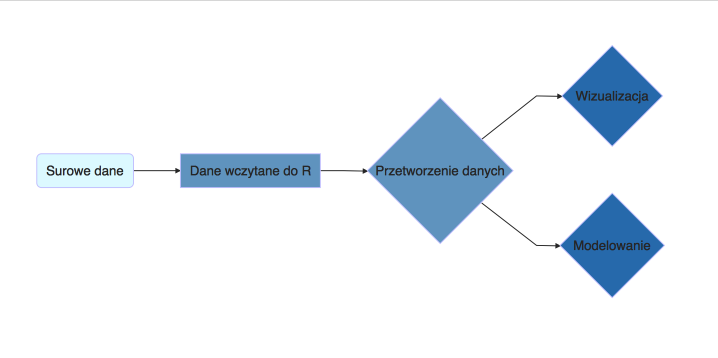

Kody: http://tinyurl.com/stwur01
install.packages(c("ggplot2", "dplyr"), repos = "https://cloud.r-project.org/")
download.file(url = "https://github.com/michbur/Diagnoza_dane/archive/master.zip",
destfile = "diagnoza.zip")
unzip("diagnoza.zip", exdir = getwd())
load("./Diagnoza_dane-master/osoby.RData")
load("./Diagnoza_dane-master/osobyDict.RData")